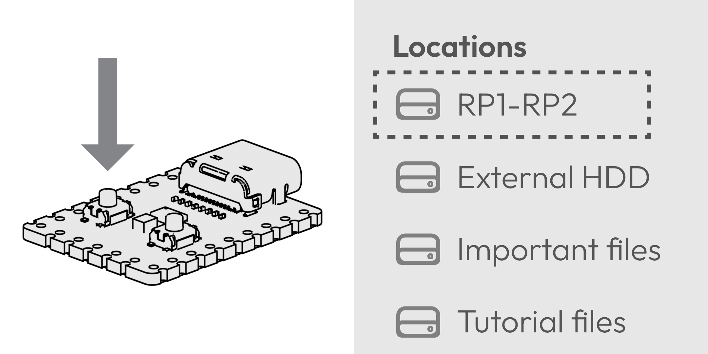
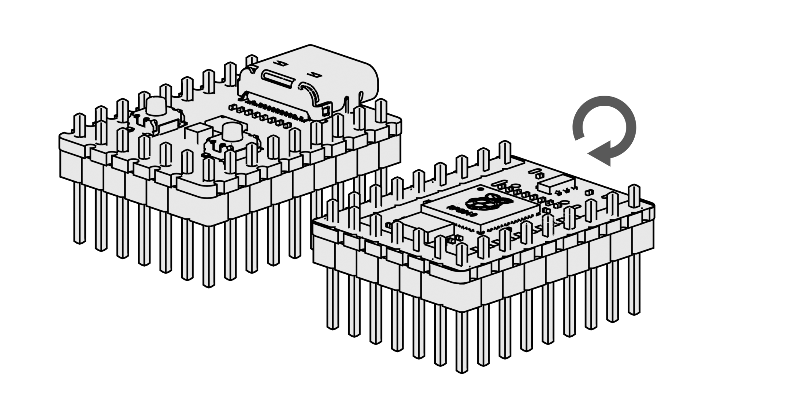
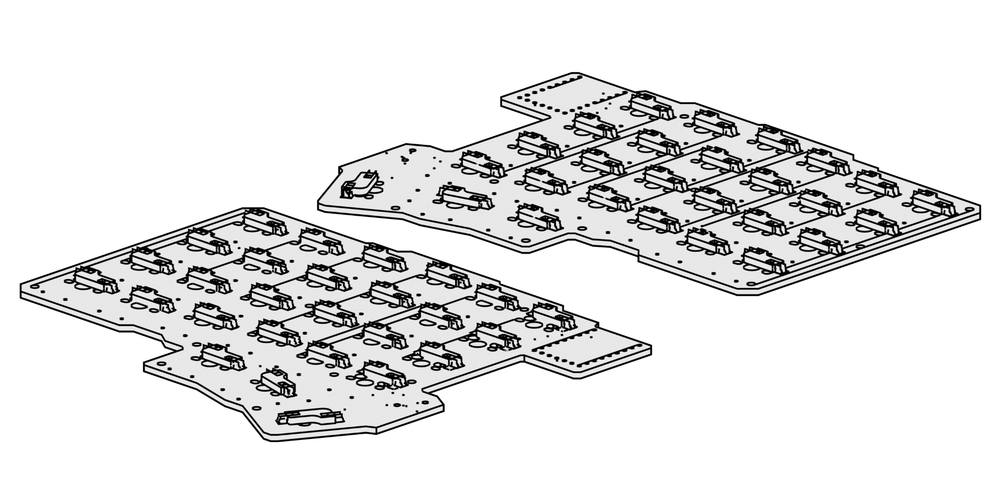
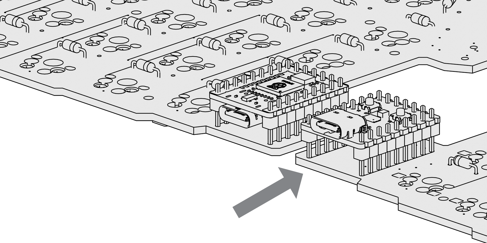
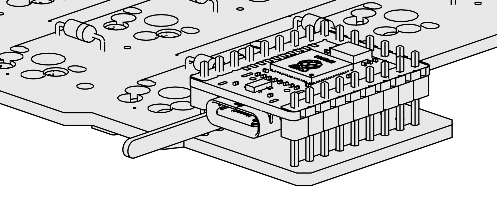
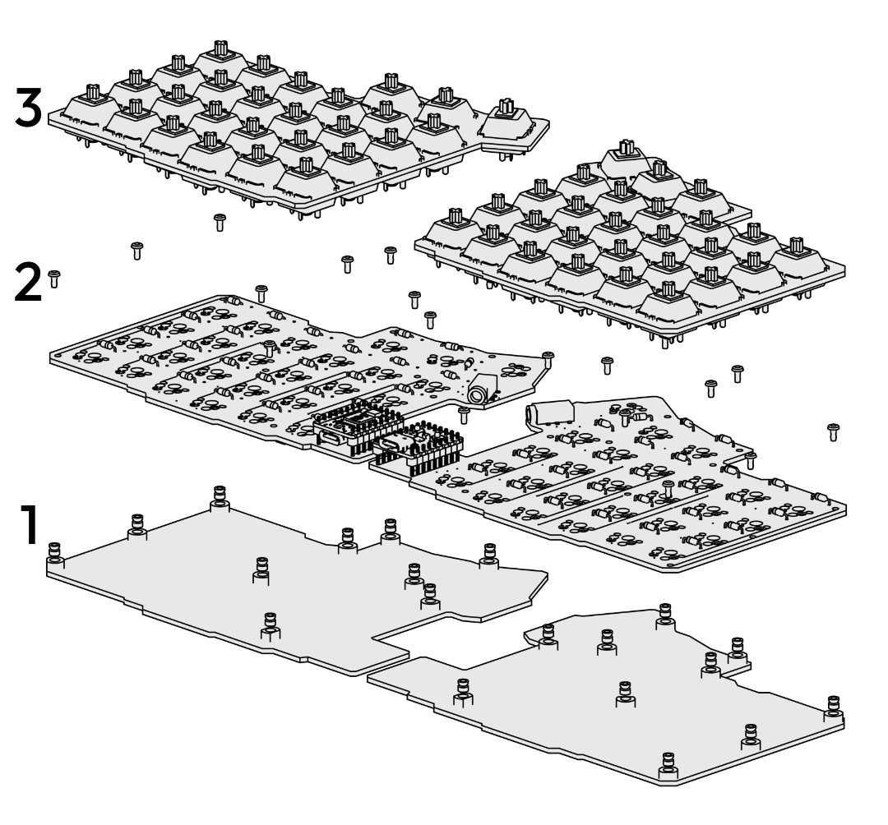
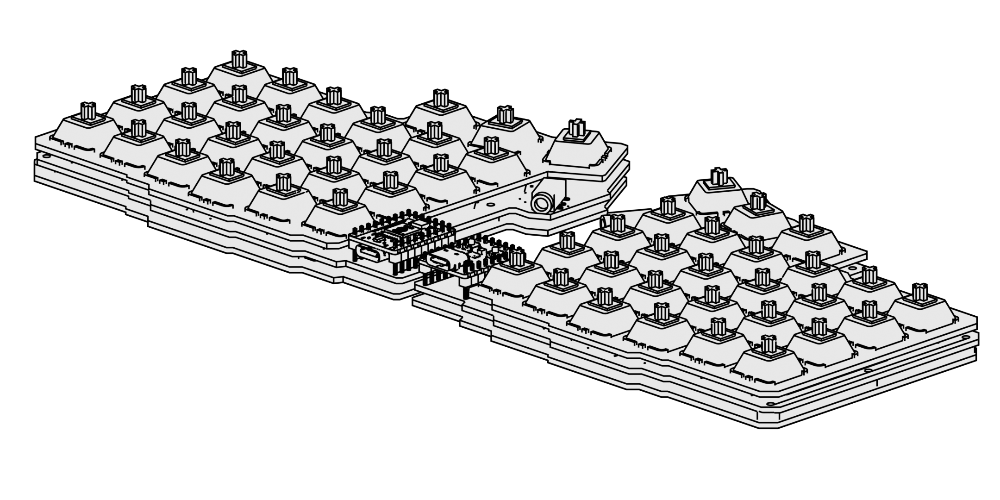

Build Guide
Bill of materials
- 54 x MX compatible key switches
- 54 x Kailh Hotswap Sockets
- 54 x 1N4148 Diodes
- 52 x 1u keycaps
- 2 x 1.5u keycap
- 2 x RP2040 Zero
- 2 x PJ320D audio sockets
- 1 x TRRS audio cable
- 20 x M2 Heat set inserts, length 2mm(OD3.2mm)
- 20 x M2 bolts, length 4mm
- 2 x PCB
- 2 x Bottom plate
- 2 x Top plate
Most of the components can be found on Aliexpress. PCB can be bought from a PCB manufacturer, usually there is a minimum order of 5 pcs. This is fine, because you can use the same PCB design on both sides of the keyboard.
PCB thickness should be 1.6mm, 2 layers and lead free finish. You can find gerber files from the repository.
Top and bottom plates can be printed from PLA. No supports is required.
Install firmware files to the RP2040 Zero microcontrollers. Hold down the BOOT button and connect microcontroller to the computer. It should appear as USB mass storage. Drag and drop the silakka54_vial.uf2 file, and the drive should automatically disconnect.
If you can't get the drive to show up, try a different USB cable, connect directly to the computer and make sure that USB cable can carry data. After you installed firmware to both microcontrollers, you can start the soldering process.
Solder pin headers to the microcontroller. Second microcontroller needs to be rotated, so the buttons face down.
Solder hotswap sockets to both PCBs.
Solder diodes, make sure to install those the right way round. Solder both microcontrollers. Don't solder those too close to the PCB, leave a two-millimeter gap, the legs of the pin header should be long enough.
There is no RESET pin on the Zero, so you need to have access to RESET and BOOT buttons if you want to change/upload the firmware.
Solder the audio connectors, those should be on top of the board.
Insert heat set inserts to the bottom plates using soldering iron. Temperature should be around 220°C. Fasten the PCBs to the base with bolts, insert key switches to the top plate and push the plate to the PCB.
Don't bend any pins! Plates should connect without too much force.
Add keycaps, connect both halves with TRRS cable and connect the left side microcontroller to the computer.

You need to use TRRS cable, TRS cable is missing one pin!
Test functionality of the keyboard using Vial, with matrix tester you can test easily every key even if the key is mapped to nothing.